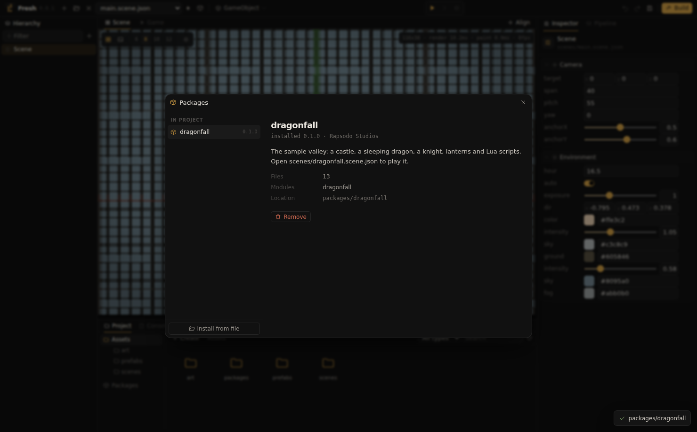
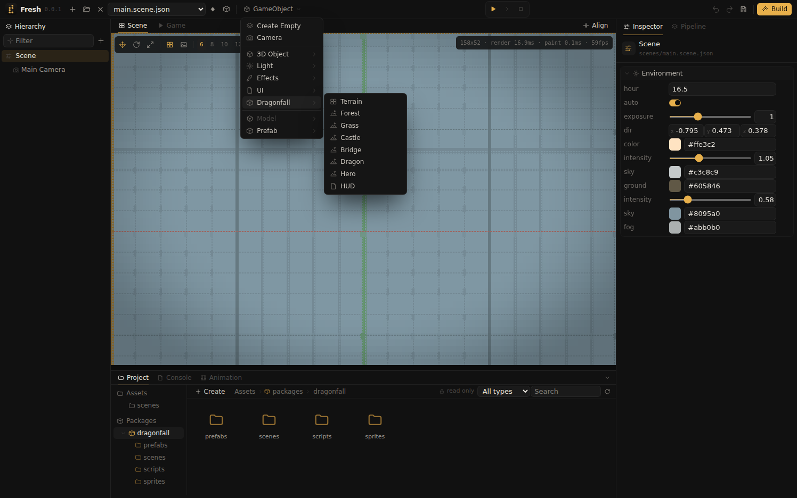

Packages
A package is a set of assets with their .meta files that is added to a project and removed from it as a whole. It is structured like a project but does not run on its own; it provides prefabs, models, textures, materials, scripts and scenes.

The Package Manager
The package button in the toolbar opens the Package Manager. The left side lists the packages In Project and those Available; the right side shows the details of the selected package.
- Install copies the package into
packages/<name>/and loads it; its assets can be used immediately. - Update appears when a newer version is available and replaces the installed one.
- Remove deletes the package from the project. References to its assets show as missing.
- Install from file installs a
.ascdiipackfrom anywhere on disk.
Available packages come from two sources: packages built into the editor, such as the Dragonfall sample, and every .ascdiipack file in the package folder (~/.config/ASCDIIEngine/packages on Linux, %AppData%\ASCDIIEngine\packages on Windows).
Installed packages are read only

Installed packages are listed under Packages in the Project window. Their assets are used like the project's own: prefabs are placed in scenes, materials applied to objects, sample scenes opened and played. Files inside a package cannot be renamed, moved, deleted or changed, and its scenes cannot be saved, so updating or removing a package never affects the project's own work. Assets that need changes are copied into the project's folders first.
Code modules
Some packages use components written in Go, which are built into the editor and the player. Such a set of components is a module; Dragonfall's terrain, castle, dragon and knight form one, see Dragonfall module. A package names the modules it requires; installing it adds them to the project manifest, and their components appear in the GameObject menu and in Add Component. Removing the package removes its modules unless the project's scenes or another package still use them. A package that requires a module the editor was built without shows a warning and cannot be installed.
A new, empty project has no modules and offers only the engine's own components.
Making a package
- Place the assets in one folder of the project, for example
props/street, together with everything they reference. - Choose Export Package in the folder's context menu in the Project window. The context menu of Assets exports the whole project.
- Enter a name (lower case letters, digits, dots and dashes) and a version, and select where to save the
.ascdiipackfile.
The file is a zip archive with the assets, their .meta files and a pack.json:
{
"format": 1,
"name": "street-props",
"version": "1.0.0",
"engine": "0.0.3",
"description": "Lanterns, benches and signs",
"modules": []
}Assets keep their ids, so references between them remain valid in the target project. If the project already contains an asset with one of the package's ids outside the package, the installation stops and lists the conflicting files.
From the command line
ascdii pack list MyGame
ascdii pack install MyGame dragonfall
ascdii pack install MyGame ~/Downloads/street-props-1.0.0.ascdiipack
ascdii pack remove MyGame street-props
ascdii pack export MyGame/props/street -name street-props -version 1.0.0